9. cc2fceae1

Context: unmarked, not rated
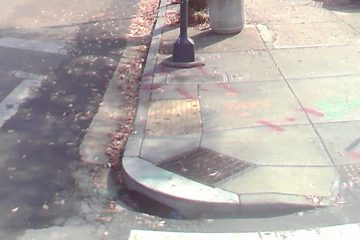
Each card is one label that the miner would add to RampNet's training data: a spot in a panorama where other captures agree there is a curb ramp, but this panorama's detector did not fire. Look at the large view on the left and answer one question: Is there a curb ramp at the ring? The smaller view on the right is another capture of the same corner, shown only as context, without a ring.
The sliders under each ringed view adjust that card's levels, gamma, local contrast, brightness, contrast and saturation; the setting is saved with the answer.
Enter your rater id first (lower-case letters, digits, "_" or "-"; it can also
come from the page address as ?rater=yourid). Answers are saved in this browser
per rater as you go; Export writes them to mined_label_check__<rater>.json.
Keyboard: Tab moves between cards' controls; arrow keys change the answer within a card. Press
Y, N or C to answer the card that has focus or, when focus is outside every card (for example
after clicking an image), the topmost card on screen. The keys do nothing inside a text field.
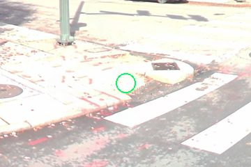
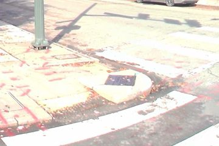
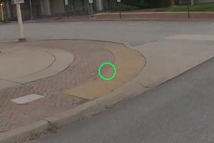
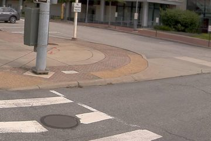
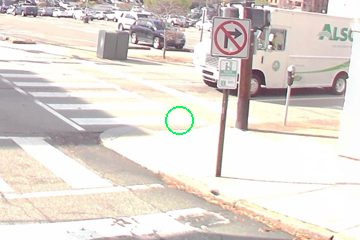
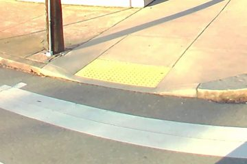
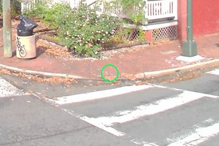
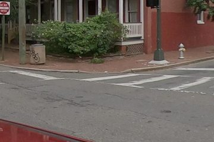
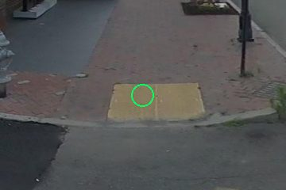
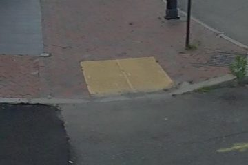
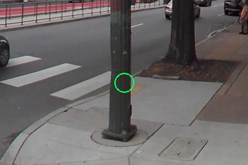
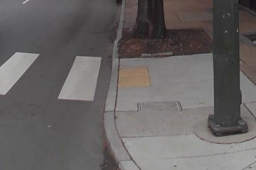
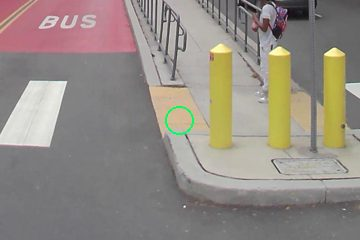
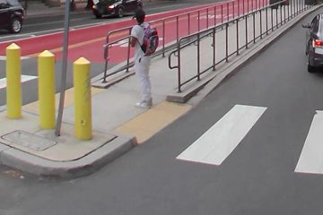
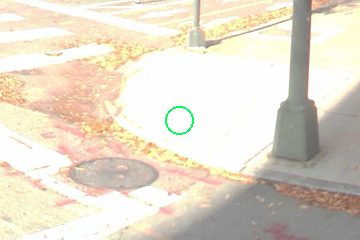
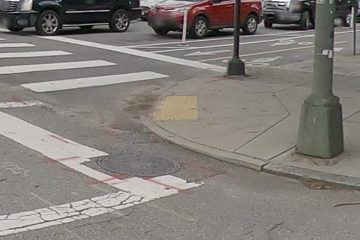

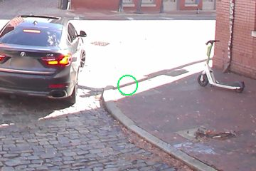
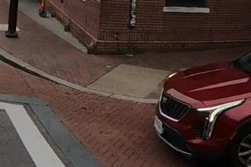
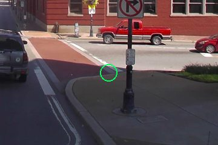
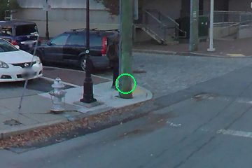
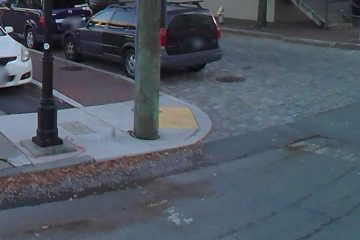
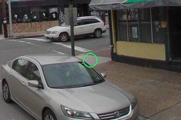
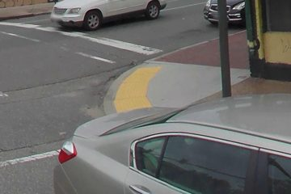
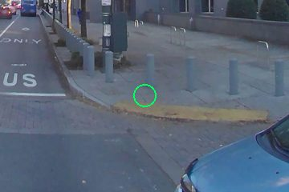
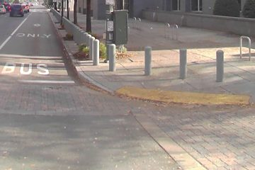
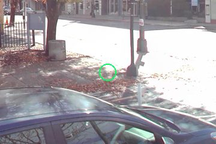
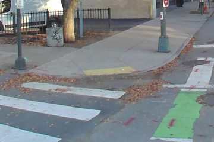
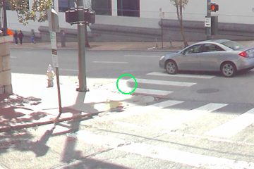

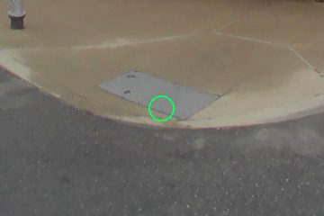
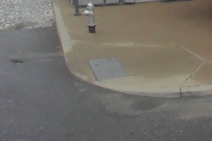
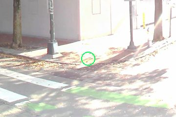
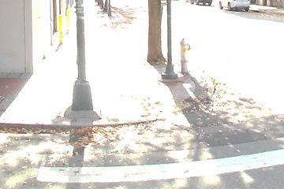
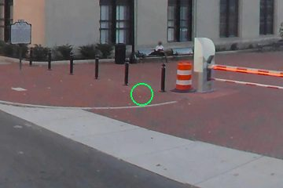
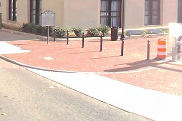
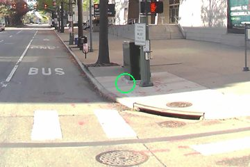
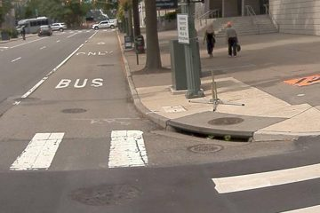
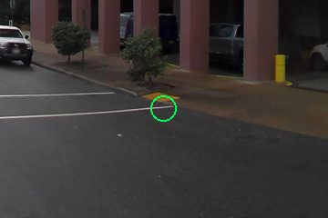
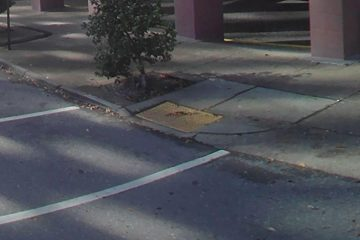
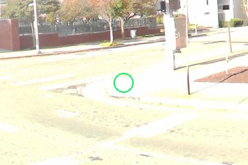
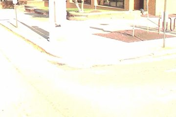
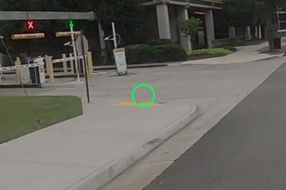
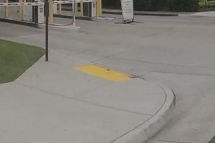
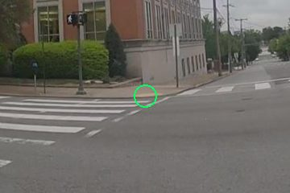
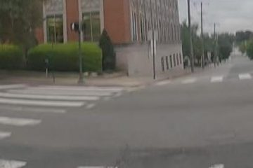
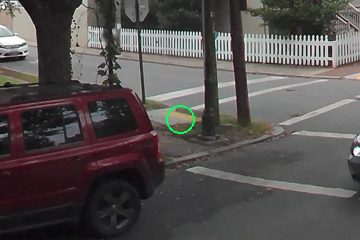
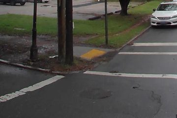
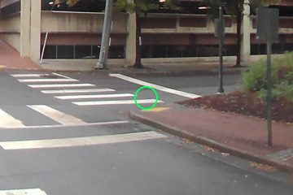
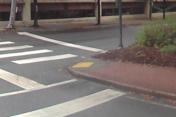
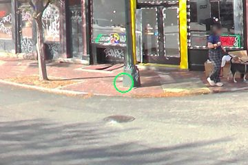